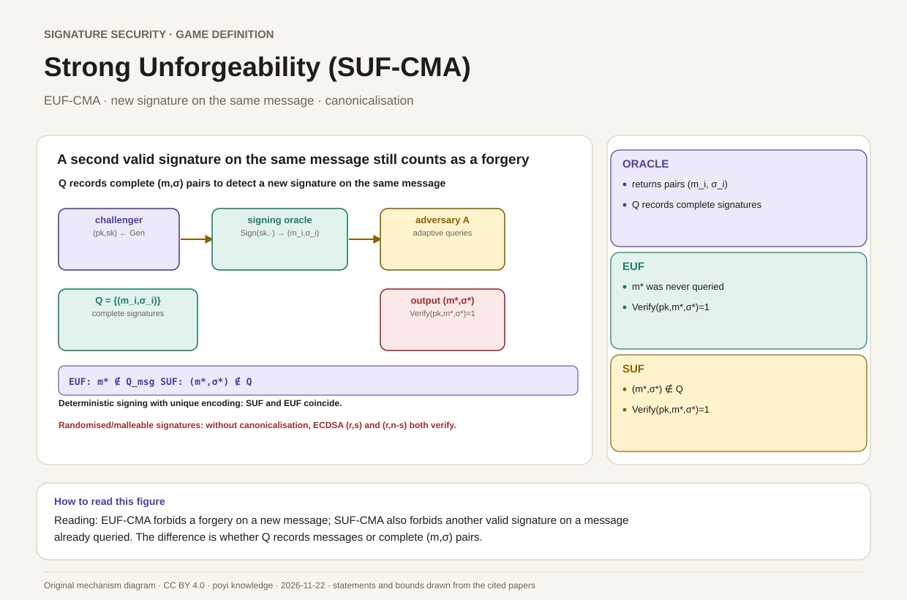
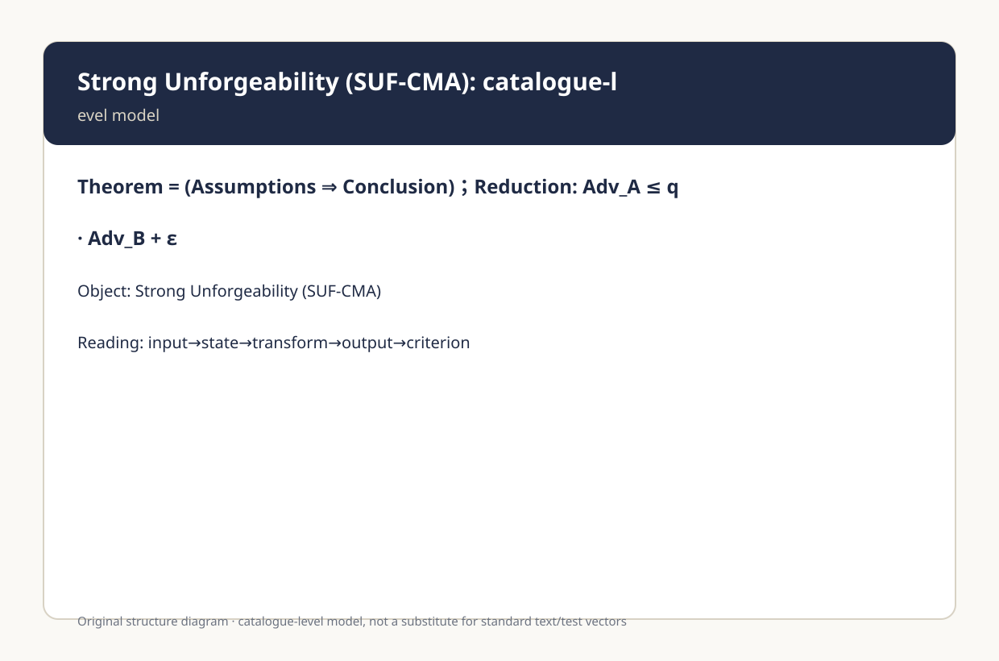

Principles
Theorem: SUF-CMA Security (强不可伪造). ### The game definition
A signature scheme consists of Gen, Sign and Verify. The challenger generates (pk,sk), gives pk to an adversary A, and lets A query Sign(sk,·). Let Q be the set of (m_i,σ_i) pairs returned by the oracle. A outputs (m*,σ*). EUF-CMA: A wins if m* was never queried and Verify(pk,m*,σ*)=1. SUF-CMA: A wins if (m*,σ*) ∉ Q and Verify(pk,m*,σ*)=1. Even if m* was queried, a different valid signature still counts as a forgery. The advantage is Adv^{SUF-CMA}_{SIG}(A)=Pr[A wins]; the scheme is SUF-CMA secure if it is negligible for every PPT A. ### Why Q must record complete signatures
If Q recorded only messages, an adversary who receives a signature σ on m could output a different valid signature σ′ on m and be misclassified as “m was never queried”. SUF-CMA distinguishes σ from σ′: the elements of Q are (m,σ) pairs, not a set of messages. ### Relation to EUF-CMA
SUF-CMA ⇒ EUF-CMA: a forgery on a new message also violates SUF-CMA. The converse fails: there are EUF-CMA secure schemes that are re-randomisable or malleable.

Why it matters
EUF-CMA only forbids a forgery on a new message; it allows an adversary who receives a signature on m to output another valid signature on m. SUF-CMA treats such a signature transformation as a break. For signcryption, authenticated encryption, group signatures and some CCA constructions, uniqueness/non-malleability of signatures is needed in the security proof.
If Sign is deterministic and Verify accepts only one encoding, no second valid signature on the same message exists, so SUF-CMA and EUF-CMA coincide. Randomised signatures need not: both (r,s) and (r,n-s) verify in ECDSA, so without canonicalisation it is not SUF-CMA.
A protocol must check not only “the signature is valid” but also canonicalisation, replay protection and unique encoding. Treating the high-s variant of ECDSA as “another signature” can break deduplication, tickets and signature aggregation.
Applications
- Write down the probabilistic algorithms and verification equation. 2. Define Q as the complete set of (m,σ) pairs returned by the oracle, not just the queried messages. 3. Let the adversary output (m*,σ*); check Verify=1 and (m*,σ*)∉Q. 4. For randomised signatures, check for re-randomisation or malleability; for deterministic signatures, check whether verification accepts multiple encodings. 5. When SUF-CMA is required, use a strongly unforgeable construction, canonical encoding, or an explicit signature-uniqueness check.
Signcryption, CCA-secure hybrid encryption, group signatures, licence/ticket deduplication, and blockchain transaction signatures.

Limits & attacks
- SUF-CMA does not prevent key leakage, side channels or implementation errors; it is only a signature-forgery game. 2. If verification accepts multiple encodings, a mathematically unique signature can become several valid strings at the protocol layer. 3. Uncanonicalised ECDSA has the (r,n-s) transformation; some deployments enforce a low-s rule, but this is not every implementation’s default. 4. A randomised scheme may be EUF-CMA secure and still re-randomisable; SUF-CMA must be proved separately. 5. Strong unforgeability does not provide anonymity, unlinkability or non-repudiation; those are separate goals. 6. A proof in the ROM or standard model does not automatically transfer to a concrete implementation.
SUF-CMA is a definition, not a property label for an algorithm; calling a scheme SUF-CMA requires the concrete scheme, verification rules and a proof or assumption.
History
Goldwasser, Micali and Rivest gave the definition of existential unforgeability under adaptive chosen-message attacks in 1988 and established a hierarchy of signature security. That definition only requires that the adversary cannot forge a signature on a “new message”.
Later work on signcryption and strong signatures added “a new signature on the same message” to the attack target, yielding SUF-CMA/sEUF-CMA. In 2006 Boneh, Shen and Waters gave a strongly unforgeable construction based on CDH, showing that strong security need not rely on stronger assumptions such as Strong-RSA or Strong-DH.
Deterministic signatures such as EdDSA are naturally close to strong unforgeability; ECDSA needs low-s canonicalisation; randomised schemes such as RSA-PSS require a separate analysis. Protocol designers should write signature-encoding uniqueness into the specification instead of relying on the mathematical definition alone.
Worked example & verification
Formal model and reproduction steps
[\Pr[\mathrm{Bad}_A(\lambda)]\le \varepsilon(\lambda)]
SUF-CMA Security: the registered public parameters, key material or randomness, and message are mapped through the stated transformation to an output checked against the registered criterion. The worked example is a structural reproduction, not a new test vector; parameter ranges, standard versions and implementation details remain source-bound.
References
- Wikipedia search entry for 强不可伪造. https://zh.wikipedia.org/w/index.php?search=%E5%BC%BA%E4%B8%8D%E5%8F%AF%E4%BC%AA%E9%80%A0
- Handbook of Applied Cryptography (Menezes, van Oorschot, Vanstone). https://www.cacr.math.uwaterloo.ca/hac/